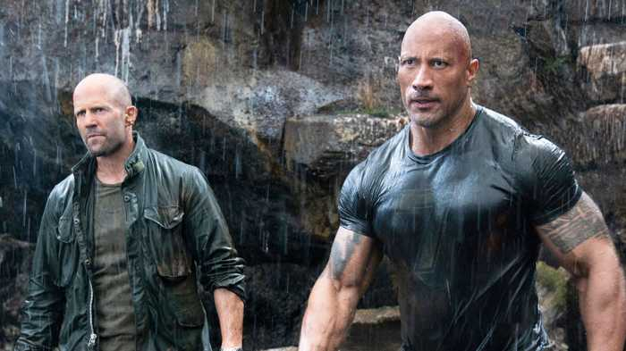
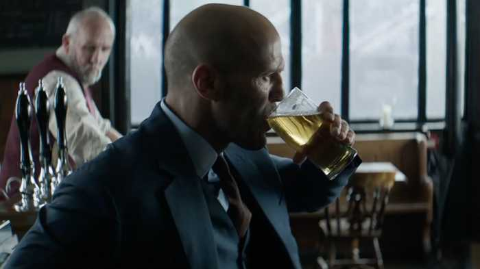

It’s fast. It’s furious. It’s frequently ridiculous. And it’s a whole bunch of fun. Fast & Furious: Hobbs & Shaw takes the long-running action franchise a whole new road, in a buddy team-up movie that unites Dwayne Johnson’s Luke Hobbs and Jason Statham’s Deckard Shaw on a mission to take down Idris Elba’s villainous Brixton.
When director David Leitch came to town, he spoke to the Empire Podcast for a spoiler special episode,delving into the alternative edits, top-secret cameos, and where the series goes next.
Listen to the episode here, and read on for 13 interesting tidbits he dropped through the interview.
It nearly had a different opening

His director’s cut could end up on the Blu-ray

Before we get to the ice-cold can of whoopass, Hobbs & Shaw has a cold open – going straight in on Vanessa Kirby's Hattie Shaw infecting herself with the programmable virus. But it didn’t always start that way, as Leitch details. “I had two versions of the movie – first act, very different,” he reveals. “One was more non-linear and I start on those duelling close-ups of them insulting each other, and they're staring at camera, right at the lens. And then you smash cut and it's 'One Day Earlier', and then they wake up, the alarm clocks go off, they're respectively hanging a guy out of the window. Then we flash to the night that the virus was stolen.” That unused version was Leitch’s personal favourite of the two – not that he has any issues with the final cut. “It was a little more frenetic,” he argues. “Tonally, I think it set up the movie in a more fun way. But ultimately I think it wasn't as clear, and when you're making a movie for such a wide audience, you sometimes have to step back and go, I want to make this as accessible to people as possible. I liked both openings. The cold open is great – it sets up the stakes, and then we meet our guys and you sort of delay the anticipation. They both have their merits."